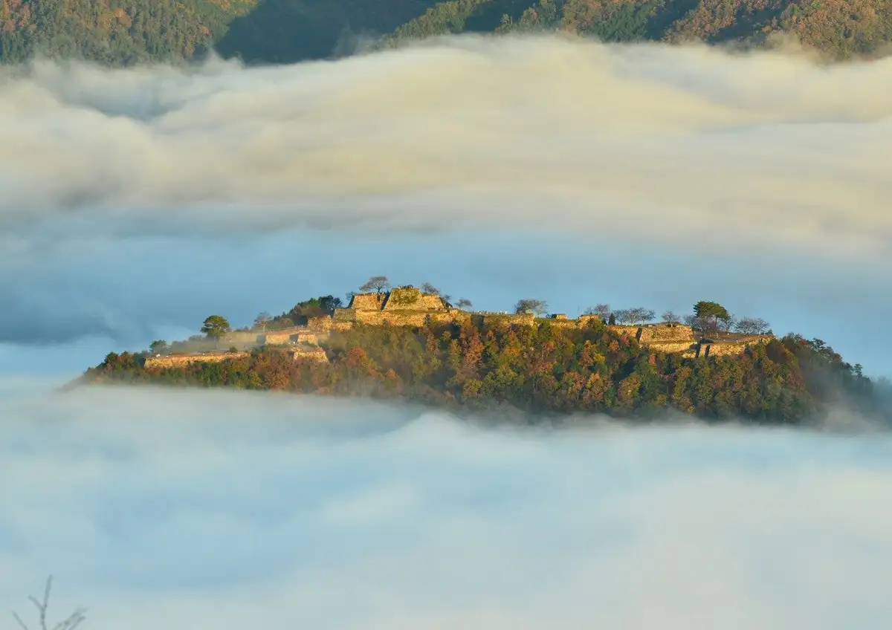
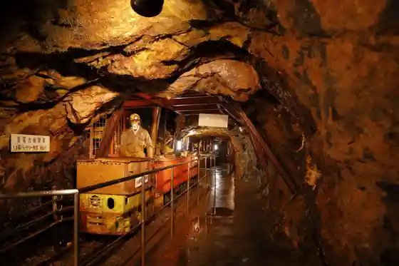

Japan / Hyogo / Asago
Asago, Hyogo
Asago · Hyogo
Asago
Highlighted on the Hyogo map.

Stay
Takeda Castle Castle Town Hotel EN
Dispersed heritage hotel in the castle-town streets closest to Takeda Castle ruins
Takeda Kami-machi west side 363, Wadayama-cho, Asago, Hyogo 669-5252 · 0120-210-289 · Official / source link
Yuhiken
Home-style cooking ryokan in Wadayama used as a base for Takeda Castle visits
Wadayama 31, Wadayama-cho, Asago, Hyogo · 079-672-2059 · Official / source link
Dining
Tsurushi Yakiniku Otaya Wadayama
Ranch-direct Tajima beef yakiniku restaurant in Wadayama
Tamaki 890-1, Wadayama-cho, Asago, Hyogo · 079-670-1129 · Official / source link
Grand Chef
Local restaurant in Wadayama listed by Asago tourism near Takeda Castle approaches
Hirataoka 330-3, Wadayama-cho, Asago, Hyogo · 079-670-3117 · Official / source link
Sights
Takeda Castle Ruins
Mountain castle stonework nicknamed the castle in the sky for its sea-of-clouds views
Takeda, Wadayama-cho, Asago, Hyogo · Official / source link
Ikuno Silver Mine Historic Site
Preserved silver-mine tunnels and exhibits in the former Ikuno mining town
Ikuno-cho, Asago, Hyogo · Official / source link
